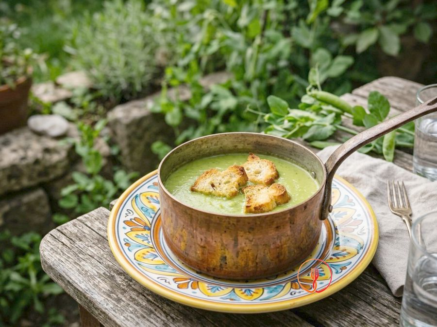

Pea velouté
Sweet green cream soup with croutons.
A delicate and velvety cream, ideal for a light dinner during cooler evenings. The naturally sweet flavor of peas pairs perfectly with the crunchiness of golden bread croutons.
Ingredients
- Frozen or fresh peas250 g
- Potato (peeled)100 g
- Yellow onion20 g
- Vegetable broth (no salt added)400 ml
- Plain bread (1 slice)30 g
- Extra virgin olive oil10 g
Allergens
Gluten
May contain traces of: Celery.
Method
- Wash and peel the potato, then cut it into small cubes of about 1 cm to ensure even cooking.
- Finely chop the onion and stew it in a saucepan with two tablespoons of vegetable broth over low heat until translucent.
- Add the peas and potato cubes to the saucepan, stirring for one minute to combine the flavors.
- Cover the vegetables with the remaining boiling vegetable broth and bring back to a gentle simmer.
- Reduce the heat and cook with a lid for about 15-18 minutes, until the potatoes are very fork-tender.
- Meanwhile, cut the bread into 1 cm cubes and toast them in a hot non-stick pan without fat until golden brown.
- Remove the saucepan from the heat and blend the mixture with an immersion blender at maximum power until smooth.
- Pass the cream through a fine-mesh sieve to remove any residual pea skins, ensuring a safe and velvety texture.
- Serve the cream soup lukewarm in shallow bowls, topping each portion with raw extra virgin olive oil and the bread croutons.
Tips
- Pass the cream through a fine-mesh sieve after blending to achieve an ultra-smooth texture.
- Toast the bread cubes with a drizzle of oil until they are golden brown and crunchy on all sides.
- Avoid overcooking the peas to preserve their bright green color and fresh taste.
Variations
- Garnish the dish with a spoonful of Greek yogurt for a touch of balanced acidity.
- Scent the cream with a few fresh mint leaves for a more spring-like and refreshing version.
Nutrition facts (estimate)
| Per serving (320 g) | Per 100 g | |
|---|---|---|
| Energy | 909 kJ / 217 kcal | 284 kJ / 68 kcal |
| Protein | 8.1 g | 2.5 g |
| Carbohydrates | 28 g | 8.9 g |
| of which sugars | 6.8 g | 2.1 g |
| Fat | 6.2 g | 1.9 g |
| of which saturates | 0.9 g | 0.3 g |
| Fibre | 7.4 g | 2.3 g |
| Salt | 0.1 g | 0.03 g |
AI estimates based on average CREA / USDA data: indicative only, not a substitute for medical or dietitian advice.
Open the recipe in the app for the shopping list, ingredient sheets and nearby shops.